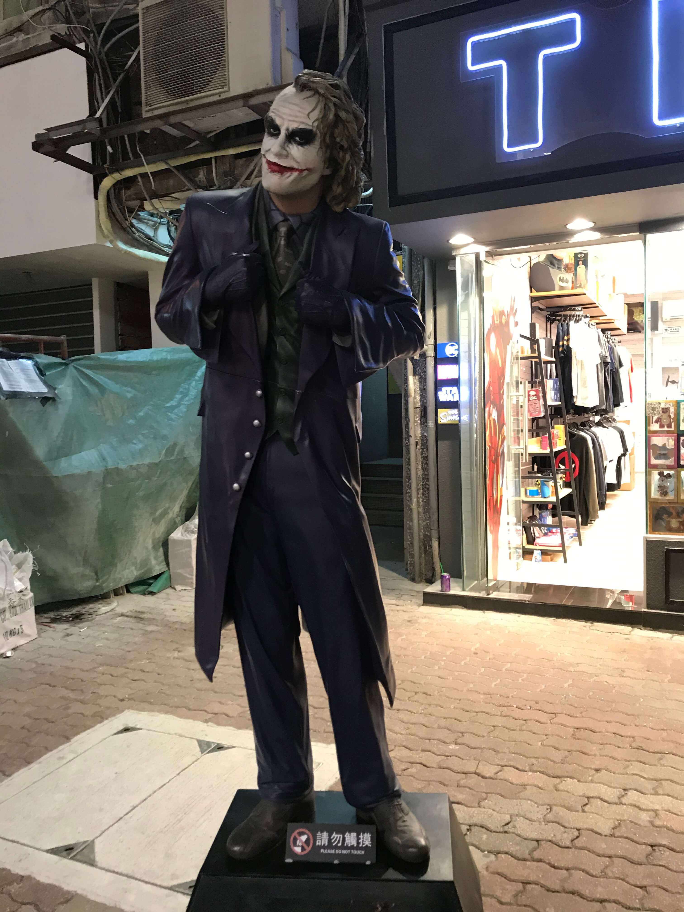
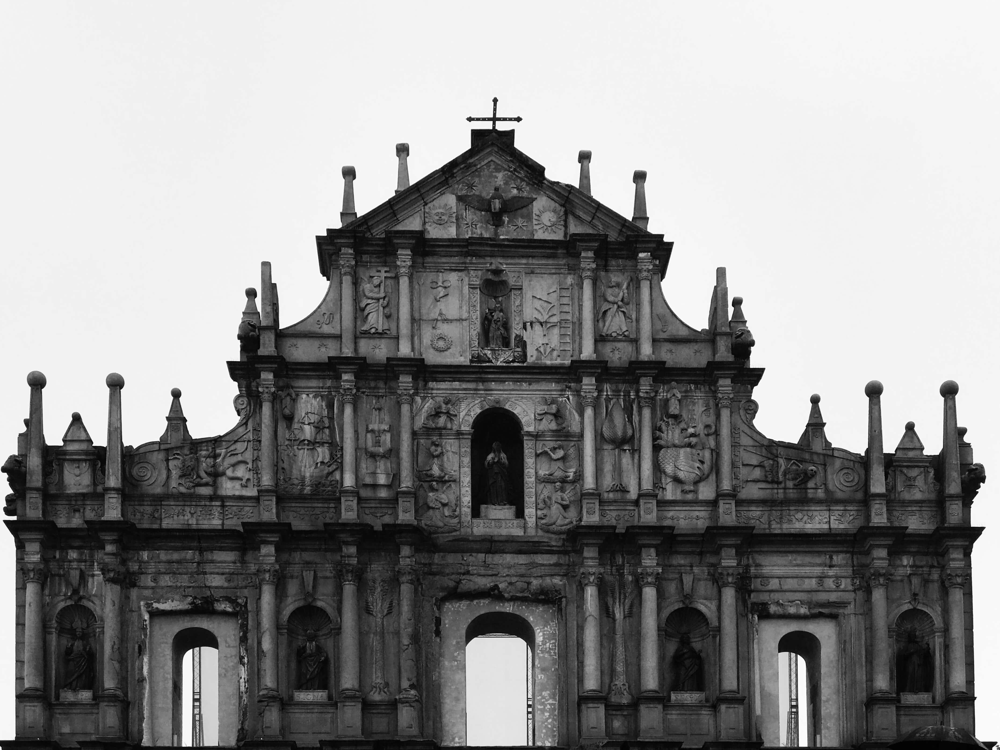

去年元旦在泰国，想必是曼谷跨年给小烦的印象太好，今年老早就吵着要计划跨年行程。1.3要在于都办酒席早就定下来了，便只能在国内了。赣州离广东不远，又有一些朋友在这里，和朋友在一块跨年应当也不错。加之种草已久的顺德美食、澳门塔蹦极，行程很容易便串联起来了：
Part1. 上海 - 珠海 - 澳门（迫于贫穷，飞珠海从拱北过关）
Part2. 澳门 - 珠海 - 顺德（寻味顺德）
Part3. 顺德 - 深圳 （和朋友订民宿跨年美滋滋）
Part4. 深圳 - 赣州 （酒席）
Part5. 赣州 - 杭州 （迫于贫穷，顺便找朋友吃个饭）
Part6. 杭州 - 上海 （八天六段行程，充实）
早上六点半的航班，想着前一晚早点休息，没想到两个人下班回家都恰好碰到了工作上的事情，无奈陪伴电脑到十点，还好前一晚已经大概收拾了一下行李，即便如此还是忙到了凌晨，草草睡了几个小时。三点钟起床到浦东机场，航班倒是顺利，准点到达珠海，又约了车去拱北口岸，已是又困又饿，正好口岸广场有很多美食摊位，便先吃了一顿，馄饨面回血不少。
早做过攻略，拱北过关后有很多到各个酒店的免费接驳巴士，我们预定的葡京也有巴士安排。过关后倒是很容易看到巴士停车场，入口处各个酒店的牌子也大致有标明。队伍已经老长了，我们便跟在葡京的标牌队伍后面。越往前排，巴士指引牌子反倒不准了，旁边看到有葡京的车，但似乎不让上人，队伍只慢吞吞的向前挪动，四下问了一圈，都不知道接驳车上车点在哪里，又无人维持秩序。周六人挺多，大家挤作一团排在各个队伍中，不断有人往前挤，不断有人从队伍里退出来，又不知道队伍尽头在哪里，是否排错了队，真好似一堆茫然无措沙丁鱼。从五度的上海到二十度的澳门，身上还穿着毛衣外套，阳光晒得脸生疼，队伍嘈杂无序，后背也渗出汗来。就这么挪了二十多分钟，出来也不是，继续排又不知道到何时，这沉没成本真让人烦躁不堪，关口管理怎么这么差！最后还是去排了出租车了，虽然排队很长，但是远远能看见尽头在哪里，好歹有个盼头。
开车到酒店倒是快，澳门半岛很小，铆足了劲开也就二十分钟即达。到达酒店时也才一点钟，比预想的早了许多。酒店三点才能办理入住，又不能提前入住，便预办了手续寄存了行李，换了衣服出发前往澳门塔。
网上已经提前购票预约了，取票上塔便是。澳门塔有58层和61层观光厅，蹦极在61层。到地方领衣服排队，人虽不多不过速度很慢，塔顶风大，挺冷。排队时又突然发现手上戒指找不到了，身上包里找了一遍也没找到，和塔上工作人员问了一下也没有发现，又想不起来什么时候开始找不到的，心里顿时懊恼，这戒指虽然只戴了几个月，平日里不觉得有什么感情，这一下突然没有，手上总觉得空了什么，叫人难受。马上就排到我了，只得压下心中烦躁，又安慰小烦回去再在行李箱里找找说不定在里面。整理一下心情，上平台准备跳塔了。
预想中我应该是会有紧张的。我从小恐高，从高处往下看，总是抑制不住的从心底渗出恐惧感。不过我并不害怕失重的感觉，以前经常做梦自己在下落，慢慢的习惯，甚至有点享受失重的感觉了。但是恐高不一样，站在东方明珠的玻璃观光厅往下看，我虽可以在上面踱步自如，但是恐惧还是消除不了的，何况这澳门塔，两百多米的高度还要自己跳下去！不过出乎我意料的是，上塔、排队、在户外平台排队，心情居然平静的出奇。乃至轮到我，穿上装备，摆pose拍照，站到平台边缘，还要对着gopro说几句，我心中毫无波澜，甚至连激动的心情也没有，只是摆不出pose也不知道该对着镜头说什么，索性不说了吧，却听到排在后面的同学窃窃私语，怕不是我紧张的连话都说不出来了吧。腿上绑好吊绳，慢慢挪步到平台边缘，低头下看，才感觉到233米高度的一点冲击，不自觉吼了一声。5，要用什么姿势跳下去呢？直接倒下去？跳水运动员姿势？4，这风真大，眼睛都被泪水糊住了。3，居然忘带隐形眼镜，妈的。2，张开手臂。1，哎，就这么跳吧。
跳下那一刻的感觉，除了吼声外，我已经全然没有印象了。闭眼和吼声是完全的本能。睁开眼睛的时候已经快到第一次下落的底部了，睁开眼睛，只看到塔体的石壁在飞快向上，失重感已经消失了，我还没来得及感受呢！虽然还吊在半空，但已经没有失重感，我已经是索然无味了，这就结束了？直起身体看看周围，又模模糊糊，唉，隐形眼镜怎么就忘带了呢。至于怎么落到地面，怎么解下绳索，有怎么回到塔上，我已经记不太清了，只是嗓子由于吼叫的痛感很是清晰。上到塔上，小烦兴奋的拿着手机要采访我的感受，嗯，什么感受呢？我居然一点紧张也没有，一点恐惧也没有，嗯，原来我的恐高也慢慢在消退，嗯，I’m fearless！本来当天如果第二次蹦极是可以打两折的，但是当天过去的比较晚，再跳第二次继续排队的话可能就要等到晚上了，塔上很冷，加之我已经知道自己并不害怕，再跳一次也只是刺激一下，还是省点钱作罢。
买的蹦极还送了一次空中漫步。妈的原来我还是恐高的，只不过蹦极只要花0.1秒闭眼跳下来就行了，而空中漫步却要始终被那种恐惧感紧绷着。不过我刚才一跳，意识里的对高度的恐惧已经退散的差不多了，我已经能够控制这部分恐惧感，而剩下的只有本能里的自我保护意识了。所以空中漫步虽然全程头皮发紧，但是该做的pose倒是都很顺利的做了。
门票有拍照和视频服务，晚上回去看视频和照片的时候还是稍稍能回忆起跳塔的一些感觉，就是今天起太早了，行程又满，在塔上的时候头发已经油的不行，视频里完全不帅，丧！
来澳门的主要目的就是蹦极，蹦极完，剩下的时间便可以悠闲的在澳门逛一逛了。澳门半岛非常小，景点之间都很近，道路比较狭窄，倒是利于步行。这里美食很多，虽然没做什么攻略，只就近在大众点评上搜索，也吃得小肚溜圆，打嗝不止。路上还偶遇了可以以假乱真的joker。晚上回去，路过狭窄的老巷子，不经意间抬头，前几个月网上看到的新葡京的赛博朋克照片居然就这么出现在我的眼前，亲眼所见比照片更加的震撼，真的魔幻，真的赛博朋克！



小烦经过刚才几个小时的努力回忆，终于想起来，戒指应该是戴在小烦手上，往垃圾桶里扔垃圾的时候掉到垃圾桶里了。刚一回到酒店，小烦就跑到前台问垃圾桶里有没有捡到个戒指，这都过了几个小时了，垃圾桶不知道被倒掉几次了，前台打电话问了一下也是摇头。作罢，就当做旧的不去新的不来吧。回到房间小烦闷闷不乐，躺在床上不吭声了，一直以为是我把戒指弄丢了，原来是自己弄丢的！我抱着最后的希望在行李箱里翻找，嘿嘿，你猜我发现了什么！
第二天就是比较轻松的四处走走了。澳门曾被葡萄牙殖民三百年，这里的一切都有深深的葡萄牙印记。大三巴牌坊、大炮台，澳门博物馆，玫瑰圣母堂，议事厅前地，这里的历史就像铺满鹅卵石的道路一样弯曲绵长。第二天空气中开始飘起雾蒙蒙的小雨，打着伞走在这弯曲道路上，各处都有庆祝澳门回归二十周年的标语，路上尽是摩肩接踵的游客，店员在各家门口面无表情的招徕客人，大三巴牌坊下有人在拍摄婚纱照，新葡京半隐没在绵密的水雾中。就这么走了几个小时，慢慢感觉到一种历史的厚重感。那三百年来，梦寐不忘的生母啊，请叫我的乳名，叫我一声澳门！

澳门逛罢，下一站便是顺德了。做葡京的接驳车到关闸，车上看到新葡京等接驳车的排队长龙引起舒适，却差两分钟没赶上高铁，无妨，多等一个小时便是。晚上八点多到达顺德，小烦已经累屁了，就近找了一家盲人按摩放松一下，按摩店对面便有肠粉点，按完打包两份肠粉回酒店吃，啊！肠粉真好吃！
这次在顺德待了一天半，美食之旅简而言之：只恨自己只长了一个胃。上次还是在西安的时候有这种感觉。寻味顺德真是不吹，虽然长垣是厨师之乡，私以为和顺德比起来还是差远了。这里的美食种类是在太多了，这里的人也实在是太会吃了，吃饭之前还要先喝茶！白天美食吃到爽，晚上刷剧刷到嗨，这几天，才真的有休假的感觉，完全不用处理工作的感觉好爽啊！顺德有很多哈罗单车和哈罗电瓶车，加之顺德地方不算很大，去哪里都还算方便，一天多的时间吃了很多地方，很是开心。应该会有第二次。
深圳，两年前十一来广州的时候路过，这次总算是真正来了一次。这次跨年就订了一个民宿和几个朋友一块过了。
头一次住这种整套的民宿，想象中应该是比较好玩的地方，不过去了之后却比较失望，房间的家具和格局都非常一般，装饰简陋，也没什么娱乐设施，看得出来房东做这个民宿没上什么心思，真是希望越大失望越大。到晚上六点多，几个小伙伴陆续赶到，本来准备用民宿厨房做几个菜庆祝一下，结果在厨房翻了一遍发现根本没什么厨具，只得用仅有的火锅锅和电磁炉，自己准备了些火锅食材，晚上煮火锅吃了。买菜、洗菜、切菜、准备装饰等各司其职。八点多谢宇最后到了，火锅正好已经烧开了，大家坐在一起，举杯庆祝2019年这最后一餐。席间大家回忆起大学生活，又不时谈起身边趣事，相谈甚欢。虽然房间简陋，但是这相聚的感觉还不错。饭毕我们四人开始打麻将，麻将机还出了几次问题，其他人在沙发上看跨年晚会，直玩到凌晨两点多。大家都困得很了，各自散去休息。

第二天顺道去了深圳的大疆，种草许久的Mavic Mini正好有现货，小烦前几天也已松口，果断下单拿下，这下我也是有无人机的人啦！正好当天是元旦，还送了一个围巾作为新年礼物，开心呀。
2号回于都准备酒席，酒席过程倒是简单，几桌客人顺序敬一杯茶水，坐下吃饭即可，倒没什么多说的，只是透过结婚这件事发现很多人都变了，我们也变了，时间的力量强大啊。
4号飞机到杭州，和老张约了个饭。嗯，大家都还好的样子。马不停蹄的赶回上海，幸好明天还能休息一天，呼！